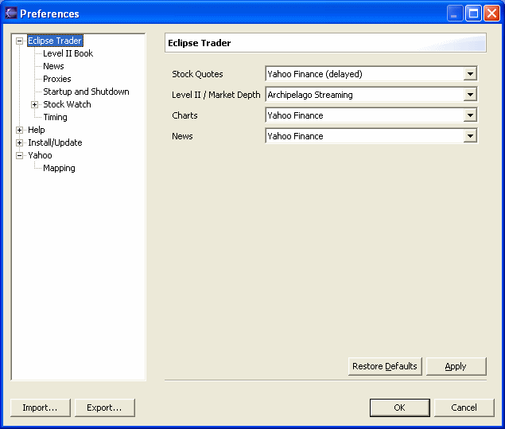
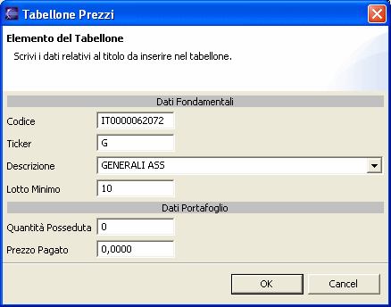

All'avvio il programma si presenta con le finestre del Tabellone Prezzi e delle Notizie completamente vuote. La prima operazione da compiere è impostare i fornitori di dati. Per accedere alle impostazioni selezionare la voce Preferences dal menu Window, quindi selezionate Eclipse Trader.

Gli elenchi a discesa mostrano per ciascuna categoria i nomi dei fornitori per i quali è stato installato un plugin adatto a fornire i dati. Alcuni fornitori (solitamente quelli che forniscono dati ritardati) non richiedono alcuna registrazione, alcuni sono gratuiti una volta effettuata la registrazione, altri sono a pagamento. Per i siti a pagamento o che richiedono una registrazione occorre prima recarsi sul sito del fornitore, registrarsi e, una volta ottenuti i propri codici di accesso, selezionare il fornitore in Eclipse Trader. Quando si avvierà la ricezione dei dati si aprirà una dialog in cui dovrete inserire i codici di accesso.
Nota: Eclipse Trader non memorizza i codici di accesso, tuttavia essendo la gestione delegata al plugin del fornitore è possibile che alcuni plugin offrano la possibilità di salvare i codici per non doverli inserire successivamente. Riferirsi alla documentazione del plugin per informazioni riguardanti la sicurezza delle informazioni salvate.
Dopo aver configurato i fornitori di dati occorre inserire nel Tabellone Prezzi i titoli che si intende osservare. Cliccando con il tasto destro del mouse sul Tabellone si aprirà un menù dal quale, selezionando la voce Aggiungi, sarà possibile inserire i titoli.

Codice
Codice ISIN del titolo. Per i mercati esteri è il codice che normalmente viene
utilizzato per reperire i dati dai fornitori di quotazioni. Spesso è identico al
campo Ticker.
Ticker
Codice alfanumerico del titolo. Per i mercati esteri è il codice che normalmente
viene utilizzato per identificare il titolo. Spesso è identico al campo Codice.
Nota: alcuni fornitori di dati del mercato italiano utilizzano il codice ISIN per reperire i dati, mentre altri utilizzano il codice alfanumerico (Ticker), quindi è consigliabile riempire entrambi i campi con i dati corretti, i plugin di Eclipse Trader utilizzeranno automaticamente il codice più adatto al fornitore.
Descrizione
Nome dell'azienda o breve descrizione del titolo. Dalla lista a discesa è possibile
selezionare uno dei titoli presenti nell'elenco di Eclipse Trader. La selezione
sovrascriverà automaticamente i dati presenti nei campi Codice, Ticker e Lotto
Minimo.
Lotto Minimo
Numero di pezzi minimo che si intende trattare. Questo valore verrà utilizzato dai
plugin di trading per impostare le quantità nelle operazioni di acquisto e
vendita.
Quantità Posseduta
Prezzo Pagato
Quantità di azioni presenti nel proprio portafoglio e prezzo medio di acquisto.
Se utilizzati, il Tabellone Prezzi permette di calcolare automaticamente i
guadagni e le perdite relativi alle azioni possedute (vedi colonne Q.tà Posseduta,
Pagato, Valore Posseduto e Ricavo).
A questo punto la configurazione iniziale è completa ed è possibile avviare la ricezione dei dati cliccando sul pulsante verde nella barra degli strumenti.
Se il fornitore dei dati selezionato richiede dei codici di accesso verrà mostrata una finestra in cui sarà possibile inserirli. Il pulsante rosso interromperà la ricezione dei dati.